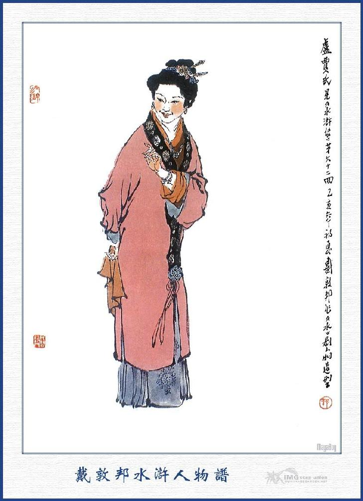
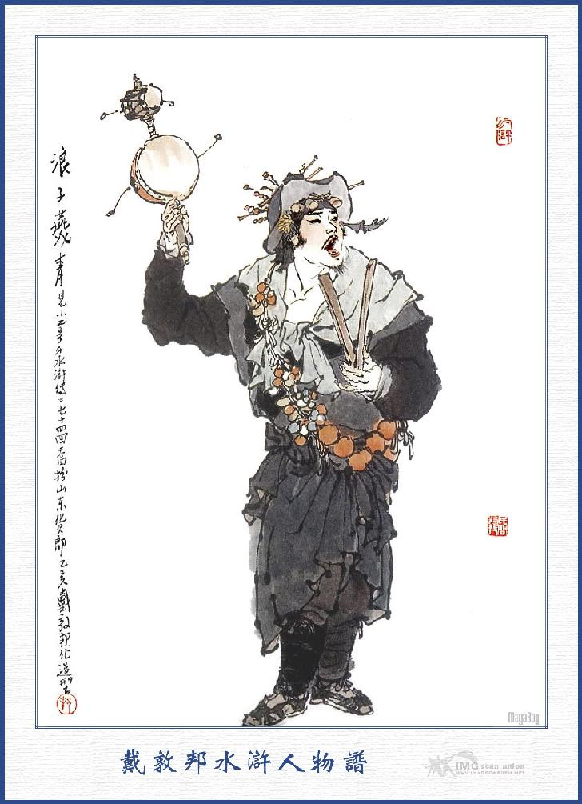
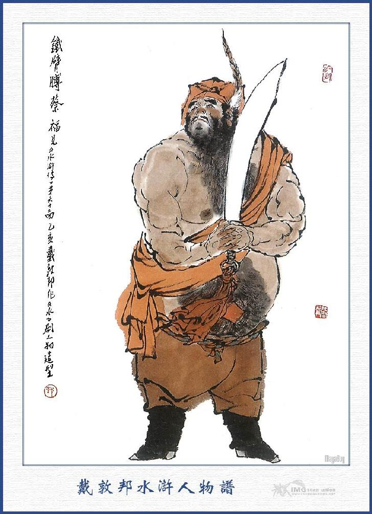
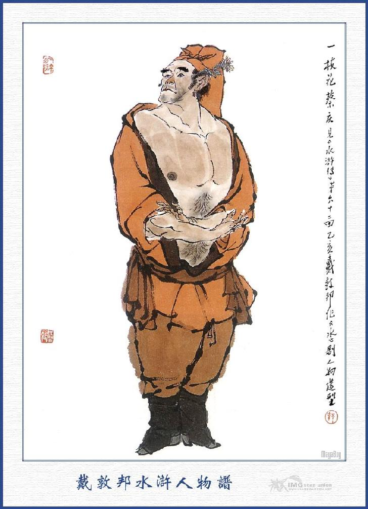
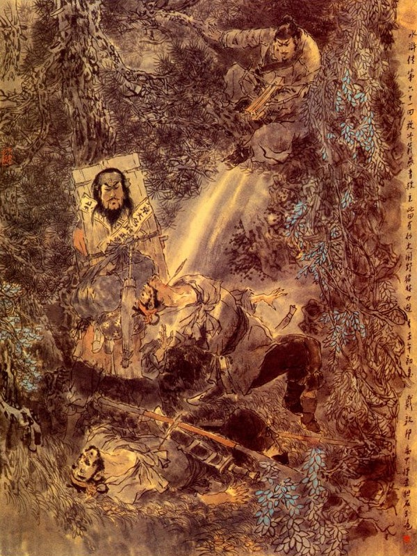
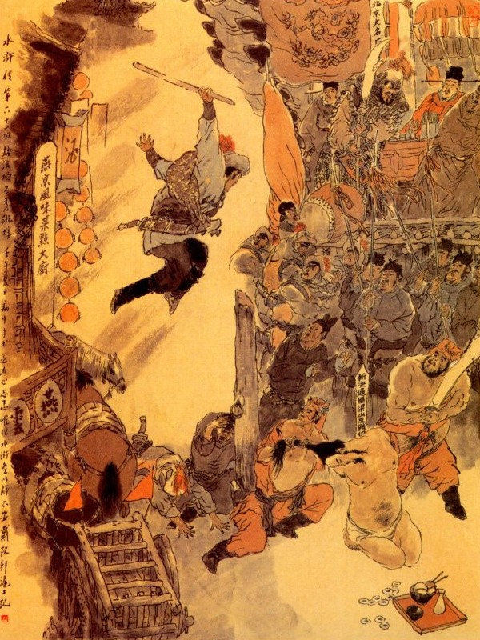

Nói về Lư Tuấn Nghĩa là một người khoẻ mạnh giỏi giang, anh hùng vô địch, song xưa nay chưa từng quen tay dưới nước bao giờ.
Nay bỗng chốc bị thuyền lật xuống dưới nước làm cho chàng ta luống cuống rụng rời chân tay, không biết lối nào mà giở. Trương Thuận liền ôm lấy ngang lưng mà ôm thẳng vào bờ. Khi vào tới bờ, đã thấy đóm đuốc sáng trưng và có năm sáu mươi người đứng đón sẵn ở đấy, chúng đem Lư Tuấn Nghĩa lên bờ, đứng xúm vào tháo dao lưng ra, cởi bỏ hết quần áo rồi toan đem thừng trói lại. Chợt đâu thấy Đới Tung chạy đến quát ngay rằng:
- Không được động đến Viên Ngoại, cứ mời Viên Ngoại vào chơi.
Đoạn rồi thấy một người mang ra một cái áo gấm, một bức quần thêu đưa đến cho Lư Tuấn Nghĩa và có tám đứa tiểu lâu la đưa cổ kiệu đến dìu Viên Ngoại lên kiệu mà khiêng đi.
Đi được vài bước, xa trông đã thấy có hai ba mươi đèn lồng sa đỏ, dẫn một toán người ngựa là Tống Giang, Ngô Dụng và Công Tôn Thắng cùng các vị Đầu Lĩnh kéo đến. Khi kiệu Lư Tuấn Nghĩa gần đến nơi, Tống Giang vội vàng quỳ xuống trước kiệu rồi các Đầu Lĩnh cũng quỳ theo cả một lượt ở sau. Lư Tuấn Nghĩa thấy vậy cũng vội vàng xuống kiệu quỳ ra ngoài đất mà nói rằng:
- Tôi đã bị bắt đến đây, xin cho sớm chết là hơn. Tống Giang cười rằng:
- Xin Viên Ngoại hãy cứ lên kiệu rồi sẽ hay.
Nói đoạn lại dìu Lư Tuấn Nghĩa lên kiệu rồi các Đầu Lĩnh đều lên ngựa mà nổi trống khua nhạc đưa thẳng về Trung nghĩa Đường.
Khi tới Trung Nghĩa Đường, các Đầu Lĩnh mời Lư Tuấn Nghĩa vào ghế giữa, đôi bên đèn nến thắp sáng choang rồi Tống Giang nói với Lư Tuấn Nghĩa rằng:
- Chúng tôi lâu nay nghe tiếng Viên Ngoại, khác nào sét đánh ngang tai, nay được gặp ngài đây, thực là thoả lòng khát vọng vô cùng. Vừa rồi bọn anh em có người không phải lỡ phạm đến ngài, xin ngài tha lỗi ấy cho.
Ngô Dụng cũng chạy đến mà rằng:
- Bữa trước tôi có vâng lệnh Huynh trưởng tôi đến cửa ngài, giả làm thầy đoán số, để mời ngài đến núi Lương Sơn cùng tụ đại nghĩa với nhau mà thay Trời làm Đạo, vậy ngày nay ngài đã tới đây, thực là hạnh phúc cho sơn trại không biết tới đâu mà kể.
Đoạn rồi Tống Giang mới Lư Tuấn Nghĩa ngồi vào ghế thứ nhất. Lư Tuấn Nghĩa cười mà đáp rằng:
- Lư Tuấn Nghĩa tôi khi trước ở nhà thực không có phép gì chết được, nhưng ngày nay đến thực không muốn sống làm chi. Định giết xin cứ giết cần gì phải đùa như vậy?
Tống Giang vui vẻ đáp rằng:
- Lẽ nào chúng tôi dám đùa với Viên Ngoại, thực là chúng tôi khâm phục uy tín của Viên Ngoại, tựa hồ trong lòng đói khát đã lâu, bởi thế chúng tôi mới lập kế mời ngài đến đây, tôn làm chủ sơn trại, cho anh em chúng tôi được sớm khuya theo lệnh của ngài.
Lư Tuấn Nghĩa nói:
- Thôi xin đừng nói nữa, tôi đây muốn chết thì dễ bằng muốn cho tôi theo thì rất khó.
Ngô Dụng vội gạt đi rằng:
- Nếu vậy để hôm khác thì ta sẽ bàn. Nói đoạn liền sai đem rượu lên để thết đãi, Lư Tuấn Nghĩa không sao từ chối được, đành gượng uống năm ba chén rồi nghỉ lại ở đó.
Ngày hôm sau Tống Giang sai giết trâu mổ ngựa, bày tiệc linh đình, mời Lư Tuấn Nghĩa ra dự tiệc, Tống Giang mời năm lần bảy lượt mãi sau Lư Tuấn Nghĩa mới chịu ngồi vào ghế giữa để uống rượu.
Được một vài tuần, Tống Giang đứng dậy nói với Lư Tuấn Nghĩa rằng:
- Đêm qua thực là có điều không phải, xin ngài tha lỗi cho. Sơn trại chúng tôi đây tuy hẹp nhỏ, song Viên Ngoại cũng nên xét đến hai chữ trung nghĩa mà lưu lại nơi đây, tôi xin thuận tình nhường vị lại ngài, xin chớ chối từ làm chi?
Lư Tuấn Nghĩa đáp:
- Đầu Lĩnh nói lạ thực? Tôi đây bình sinh không có tội gì, nhà cũng đủ ăn, không đến nổi đói. Sống làm dân nhà Tống chết phải làm ma nhà Tống. Không nói đến hai chữ trung nghĩa thì tôi còn uống liều dăm ba chén ở đây, bằng nói đến hai chữ trung nghĩa thì cái bầu nhiệt huyết của tôi cũng khả dĩ tưới khắp ra đây ngay lập tức.
Ngô Dụng tiếp luôn rằng:
- Viên Ngoại đã không chịu ở đây thì cũng không nên cưỡng bách làm chi, giữ được người Viên Ngoại, chứ giữ thế nào được bụng. Có điều rằng: Anh em tôi cũng không được mấy khi ngài đã hạ cố đến chơi, vậy ngài không bằng lòng nhập đảng, chúng tôi cũng không dám ép, song xin ngài hãy lưu lại ở chơi mấy bữa rồi xin đưa trả về nhà thế là ổn tiện.
Lư Tuấn Nghĩa nói:
- Đầu Lĩnh đã biết rằng, lưu tôi cũng chẳng được nào thì xin cho tôi về ngay cho tiện không? Tôi ở đây chỉ e sợ vợ con cửa nhà không biết tin tức ra sao cả.
Ngô Dụng nói:
- Cái đó có khó gì, xin cho Lý Cố đem xe cộ về trước, còn ngài ở lại đây mấy hôm rồi sẽ về sau cũng được.
Nói đoạn liền gọi Lý Cố lên cho ít tiền nong mà giao cho về trước. Khi Lý Cố sắp ra đi, Lư Tuấn Nghĩa dặn với rằng:
- Sự khổ của ta các ngươi đã biết, ngươi về nhà nói với nương tử bất tất phải lo, nếu ta chưa chết thì ta thế nào cũng về được.
Lý Cố vâng lời mà rằng:
- Các Đầu Lĩnh có bụng quá yêu như vậy, xin chủ nhân hãy ở chơi vài tháng sẽ về, có điều chi mà ngại?
Nói đoạn từ tạ ra đi, Ngô Dụng liền đứng dậy để đưa chân Lý Cố xuống núi. Ngô Dụng cưỡi ngựa đi đến đợi ở bến Kim Sa trước. Được một lát, Lý Cố cùng các người nhà và xe cộ đi đến nơi, Ngô Dụng liền sai năm trăm tiểu lâu la, ngồi vây lại chung quanh rồi gọi Lý Cố đến trước mặt mà bảo rằng:
- Chủ nhân nhà anh đã bằng lòng bàn với chúng ta nhập đảng, ngồi vào hàng ghế thứ nhì rồi. Trước khi chưa đến đây, đã viết bốn câu thơ ở vách, tỏ ý rõ ràng ra đó, anh đã biết chưa.
Lư hoa phơ phất chiếc thuyền bơi,
Tuấn kiệt vui chơi buổi tối trời,
Nghĩa sĩ tay cầm ba thước kiếm,
Phản rồi chém lũ nghich thần chơi.
Trong bốn câu đó, mỗi câu lấy một chữ đầu hợp thành bốn chữ"Lư Tuấn Nghĩa phản"anh đã biết chưa? Ngày nay chủ nhân anh đi đến đây, đáng lẽ thì đem các anh giết đi ngay, nhưng thế thì ác quá, vậy ta tha cho các anh về, anh phải nói rõ cho mọi người biết chủ nhân không về nữa nhé.
Lý Cố vâng lời rồi lạy lấy lạy để không thôi, Ngô Dụng liền cho chở thuyền đưa Lý Cố đi rồi lại trở về sơn trại uống rượu đến chiều mới tan. Sáng hôm sau trong sơn trại lại làm tiệc vui mừng, rất là chững chạc.
Lư Tuấn Nghĩa nói với các Đầu Lĩnh rằng:
- Các ngài có lòng thương không nỡ giết, tôi cũng cảm ơn, song thà các ngài giết ngay, còn hơn bắt giữ ở đây, thực là một ngày đăng đẳng, coi bằng ba thu. Vậy xin các ngài cho tôi cáo từ hôm nay, không thể lưu lại được nữa.
Tống Giang nói:
- Không mấy khi Viên Ngoại đến chơi, vậy ngày mai tôi xin mời riêng ngài một tiệc, để trò chuyện cùng nhau cho thoả lòng khát vọng, xin ngài chớ từ chối.
Lư Tuấn Nghĩa không thể từ chối được, lại phải lưu lại cho đến ngày mai. Hết ngày mai lại đến Ngô Dụng thiết tiệc một ngày rồi đến Công Tôn Thắng một ngày rồi các Đầu Lĩnh cố nài thiết tiệc một ngày, tất cả hơn một tháng trời mà không hết lượt.
Một hôm Lư Tuấn Nghĩa lấy làm sốt ruột quá chừng, liền nói với Tống Giang để xin về, Tống Giang đáp rằng:
- Chúng tôi còn muốn lưu Viên Ngoại ở chơi ít lâu, song ngài đã nhất định đòi về như thế, vậy ngày mai tôi xin mấy chén tiễn hành, riêng về phần tôi, xin ngài chiếu cố đến cho.
Lư Tuấn Nghĩa ở đến ngày mai, nhận bữa tiễn hành của Tống Giang rồi các Đầu Lĩnh lại vật nài với Lư Tuấn Nghĩa rằng:
- Ca Ca chúng tôi kính trọng Viên Ngoại mười phần thì tôi đây cũng phải kính trọng Viên Ngoại đến mười hai phần. Nay Ca Ca tôi đã được nâng chén rượu tiễn hành vậy còn chúng tôi không lẽ ngài lại còn bỉ thử mà không nhận cho, như thế thực là phiền lòng cho anh em chúng tôi quá đổi!
Bấy giờ Lý Quỳ kêu to lên rằng:
- Tôi bị khổ sở biết bao nhiêu vào đến Bắc Kinh, mời được ông ta ra đây, nay ông không cho chúng tôi, mời bữa tiệc tiễn hành là nghĩa lý gì? Nếu vậy tôi với ông quyết đấu một phen xem sao?
Ngô Dụng nghe nói cả cười mà rằng:
- Từ cổ đến giờ chưa thấy ai mời khách như thế bao giờ? Tôi xin Viên Ngoại xét đến lòng thành của họ mà ở lại ít bữa nữa rồi mới có thể thoả thiếp cả được.
Lư Tuấn Nghĩa bất đắc dĩ phải lưu lại bốn năm hôm nữa rồi mới từ tạ ra đi. Bỗng đâu lại thấy Thần Cơ Quân Sư Chu Vũ dẫn một tốp Đầu Lĩnh đến mà nói rằng:
- Chúng tôi đây, tuy thị là hàng đàn em, song đối với Ca Ca cũng có đôi phần đóng góp, vậy không lẽ rằng chúng tôi lại không được tiễn chân Viên Ngoại hay sao? Viên Ngoại không có lòng chiếu cố, tôi đây cũng không dám phàn nàn gì, song chỉ sợ lũ anh em họ lôi thôi xin sự, thực là khó chịu.
Ngô Dụng đứng lên đáp rằng:
- Anh em bất tất phải nóng nảy như vậy, để tôi mời Viên Ngoại hãy chiếu cố ở lại mấy hôm nữa là được rồi.
Lư Tuấn Nghĩa thấy vậy, không thể từ chối được, lại đành phải ngồi lưu lại ít bữa nữa. Đoạn rồi các Đầu Lĩnh chia nhau tiễn tặng loanh quanh làm cho Lư Viên Ngoại phải trì trệ lần nữa chưa sao mà dứt đi được.
Khi Lư Tuấn Nghĩa bước chân ra đi, chính đương vào dạo tháng năm, tới nay đã thấm thoát đã hai tháng trời, cảnh sắc giang sơn bỗng chốc đã nhuộm màu thu sắc, Lư Tuấn Nghĩa lấy làm sốt ruột không sao chịu được, liền nói với Tống Giang để khẩn khoản xin về. Tống Giang cũng làm ra dáng chiều lòng Viên Ngoại mà nhận lời ngay.
Sáng hôm sau Tống Giang sai lấy quần áo cũ, cùng dao gậy của Lư Tuấn Nghĩa đưa ra trả lại rồi Tống Giang đem một mâm kim ngân, để tặng Lư Tuấn Nghĩa.
Lư Tuấn Nghĩa cười mà nói rằng:
- Tiền của này trong sơn trại làm gì mà có, lẽ đâu tôi lại nhận như thế? Song ngày nay không nhận thì cũng không lấy đâu làm lệ phí, vậy chỉ xin nhận đủ tiền về tới Bắc Kinh. Hôm đó về gần đến thành thì đã vừa tối, chàng liền nghỉ trọ ở ngoài hàng, để sáng hôm sau sẽ vào trong thành. Sáng hôm sau chàng trở dậy đi thẳng vào thành, khi đến một nơi ước chừng còn cách hơn một dặm đường nữa thì vào tới trong thành, bỗng đâu thấy một người đầu tóc bơ phờ, áo khăn rách rưới, chạy đến trước mặt rồi lạy phục xuống đất rồi khóc lên rưng rức.
Lư Tuấn Nghĩa ngạc nhiên nom đến thì chính là Lãng Tử Yến Thanh, liền hỏi luôn rằng:
- Tiểu Ất! Cớ sao ngươi đến nổi thế?
Yến Thanh gạt nước mắt mà rằng:
- Đây không phải là chỗ nói chuyện, xin chủ nhân đến chỗ khác.
Lư Tuấn Nghĩa liền theo Yến Thanh đến một chỗ vắng người để hỏi thăm duyên cớ.
Yến Thanh nói rằng:
- Sau khi chủ nhân đi độ nữa tháng, bỗng một hôm thấy Lý Cố trở về nói với Nương Tử rằng: Chu Nhân đã quy thuận với Tống Giang ở Lương Sơn Bạc mà đứng vào hàng Đầu Lĩnh thứ hai và lưu lại ở đó. Đoạn rồi hắn báo với Quan Tư mà thông lưng với Nương Tử, chiếm hết cả nhà cửa tư cơ mà đuổi tôi ra ngoài thành mà kiếm ăn quanh quẩn, để đói, chủ nhân về xem sao? Tôi chắc chắn chủ nhân không bao giờ chịu làm nghề lạc thảo, song nếu có quả thế thực thì xin nghe lời tôi mà trở về ngay đất Lương Sơn, kẻo vào thành bây giờ thì không bao giờ mà tránh cho khỏi nạn.
Lư Tuấn Nghĩa nghe nói quát lên rằng:
- Vợ ta không phải người như thế, ngươi đừng có nói liều với ta.
Yến Thanh nói rằng:
- Chủ nhân không có mắt ở đằng gáy làm chi biết được chuyện sau lưng, bình nhật chủ nhân chỉ chuyện chú vào mặt võ nghệ, không đoái đến những việc nhỏ nhen, nhân thế mà Lý Cố tư thông với Nương Tử cũng không hay biết đến. Ngày nay hai người đó đã mưu mô với nhau, nhận làm vợ chồng. Vậy nếu chủ nhân về đó thì quyết bị họ hại chứ không sai.
Lư Tuấn Nghĩa quát lên mắng Yến Thanh rằng:
- Nhà ta ở đất Bắc Kinh năm sáu đời nay ai mà không biết tiếng thằng Lý Cố nó có mấy đầu mà nó dám làm như thế? Chẳng hay chính ngươi làm càn rồi ngươi lại nói liều nói lĩnh với ta? Để ta về xem sao rồi sẽ liệu cho ngươi một thể.
Yến Thanh nhất định không nghe, ôm lấy áo Viên Ngoại mà khóc lên như mưa như gió, Lư Tuấn Nghĩa giơ chân đạp Yến Thanh ngã lăn xuống đất rồi một mình xồng xộc mà đi thảng về nhà.
Khi về tới nhà, thấy đám chủ quản cùng người nhà, anh nào anh nấy đều có vẻ kinh sợ bàng hoàng. Đoạn rồi Lý Cố đón Viên Ngoại vào trong nhà, cúi đầu lạy ngay lập tức.
Lư Tuấn Nghĩa hỏi rằng:
- Yến Thanh ở đâu? Lý Cố nói rằng:
- Xin chủ nhân thông thả rồi hãy nói chuyện. Công việc còn nhiều lắm. Chủ nhân đi xa về khó nhọc, hãy xin đi nghĩ một lát đã.
Vừa nói xong thì thấy Cổ Thị ở đằng sau bình phong, vừa khóc lóc vừa đi ra. Lư Tuấn Nghĩa lại hỏi luôn rằng:
- Nương Tử đây rồi. Yến Thanh đâu? Nói cho tôi biết.
Cổ Thị Gạt nước mắt mà nói rằng:
- Xin trượng phu đừng hỏi vội, nói ra dài dòng lắm, hãy xin nghỉ ngơi đã.
Bấy giờ Tuấn Nghĩa trong bụng lấy là nghi hoặc khó chịu, bèn cố hỏi chuyện Yến Thanh cho kỳ được.
Lý Cố nói rằng:
- Chủ nhân hãy thay quần áo vào lễ Từ Đường xơi nước hẳn hoi rồi sẽ nói, đi đâu mà vội.
Nói đoạn liền sai dọn cơn cho Lư Tuấn Nghĩa ăn. Lư Tuấn Nghĩa ngồi vào mâm cơm vừa toan cất bát đũa lên ăn thì bỗng thấy cửa trước cửa sau ầm ầm cả lên rồi thấy hai ba trăm người lính phủ xông đến nơi. Lư Tuấn Nghĩa cả kinh, ngồi ngây hẳn người ra rồi đám lính bắt trói mà vừa đến vừa dong về trong phủ Trung Thư.
Bấy giờ Lưu Trung Thư đương ngồi ngay giữa Công Đường, hai bên tả hữu có đến bảy tám mươi tên lính đứng dàn hàng, đoạn rồi chúng giải Lư Tuấn Nghĩa vào quỳ ở một bên, Lý Cố cùng Cổ Thị quỳ ở một bên.

CỔ THỊ
Quan Lưu Trung Thư ngồi trên quát hỏi rằng:
- Tên kia ngươi vốn là lương dân ở đất Bắc Kinh, cớ sao lại dám nhập bọn với đám Lương Sơn Bạc, đứng vào hàng Đầu Lĩnh thứ hai, nay ngươi còn toan về đây định kết liên trong ngoài, định đến phá Bắc Kinh là nghĩa làm sao? Phải mau mau mà thành thực ra đây.
Lư Tuấn Nghĩa nói rằng:
- Việc đó nguyên vì chúng tôi khờ dại, bị tên Ngô Dụng ở Lương Sơn đem thuật tướng số lừa dối, sau lại bắt giam ở trên núi hơn hai tháng trời, nay mới thoát thân về đây, chứ thục không có lòng gì phản bội, xin ngài xét cho.
Lưu Trung Thư quát lên rằng:
- Ngươi nói lạ! Ngươi ở Lương Sơn mà lại không thông đồng với chúng thì sao chúng giữ lâu đến như thế, vả chăng đã có vợ cùng tên Lý Cố về cáo thú đây kia, lại còn chối về lẽ gì nữa?
Lý Cố quỳ bên kia bảo với Lư Tuấn Nghĩa rằng:
- Chủ nhân đã đến đó thì thú thực đi thôi. Trên vách ở nhà đã viết bốn câu thơ phản nghịch, đó là chứng cớ rõ ràng còn chối làm chi cho phiền?
Cổ Thị cũng nói rằng:
- Việc đó không phải chúng tôi muốn làm hại gì, song nếu không thú ra thì liên lụy đến cả chúng tôi thêm khổ? Người ta thường nói: "Một người loạn chín họ bị oan! "
Lư Tuấn Nghĩa nghe đến đó kêu lên rằng:
- Thực là oan uổng cho ta quá.
Lý Cố lại đế luôn rằng:
- Chủ nhân phải bất tất phải kêu ca làm gì, việc đã rõ ràng như thế, chi bằng thú phắt đi cho khỏi khổ.
Cổ Thị lại nói rằng:
- Việc dối không ai đến chỗ cửa quan mà việc thực mà chối làm sao được. Đã đành rằng một người làm việc thì chết cũng cam tâm, nhưng còn liên lụy đến chúng tôi thì sao? Vậy bất nhược thú ngay cho khỏi đòn vọt đến thân.
Bấy giờ Trương Khổng Mục bẩm với Lưu Trung Thư rằng:
- Tên này nó răn đầu rắn mặt xưa nay, nếu không khảo tấn thì sao nó chịu nói?
Lưu Trung Thư truyền lệnh cho tra tấn, tả hữu vâng lời, trói Lư Tuấn Nghĩa ra nằm vật ở đất rồi đến luôn một trận, bắn vọt máu tươi, chết ngất đi mấy lần mới tỉnh.
Lư Tuấn Nghĩa không sao chịu nổi đòn tấn, liền thở dài than rằng:
- Quả nhiên cung mệnh ta phải chết oan như thế này. thà bất nhược nhận liều cho xong chuyện.
Trương Khổng mục nghe nói, liền biên hết khẩu cung rồi sai đóng gông từ tù nặng trăm cân, cho giam xuống ngục. Những người ngoài phủ nom thấy vậy, ai cũng thương tâm không nỡ xem.
Điều đâu bay buộc ai làm?
Anh hào hết đất phỏng cam chăng trời?
Biết thân đã mắc cạm đời,
Thà rằng vũng nước theo người cho xong?
Bấy giờ trong ngục có một người Tiết Cấp coi ngục, tên là Xái Phúc, quê ở Bắc Kinh biệt hiệu là Thiết Tý Phụ ngồi ở giữa sập và một người em ruột tên là Nhất Chi Hoa Xái Khánh cầm gậy đứng hầu một bên.
Khi chúng dong Lư Tuấn Nghĩa đến nơi, Xái Phúc bảo Xái Khánh rằng:
- Ngươi đem thằng tử tù ấy giam kỹ vào trong kia, ta đi về nhà một lát rồi lại đến ngay đây.
Xái Khánh vâng lời, đến Lư Tuấn Nghĩa giam vào ngục rồi Xái Phúc cầm gậy ra đi lối cửa ngục. Chợt đâu thấy một người quần áo rách rưới, tay bưng một thúng cơm, hai hàng nước mắt sướt mướt đầm đìa mà đi vào. Xái Phúc trông biết người đó là Lãng Tử Yến Thanh, liền hỏi rằng:
- Yến Thanh làm gì thế, đi đâu như vậy?

YẾN THANH
Yến Thanh quỳ xuống nước mắt dòng dòng, nói với Xái Phúc rằng:
- Xin Thiết Cấp Ca Ca thương hại chủ nhân tôi là Lư Viên Ngoại, nay chẳng mai bị giam vào trong lao, không có ai đưa tiền cơm nước, vậy tôi kêu xin được thúng cơm đây, để đem vào cho chủ tôi ăn tạm, xin ông rộng phép cứu cho.
Nói đến đó thì khóc nấc lên rồi nằm phục xuống đất. Xái Phúc đáp rằng:
- Được, việc đó tôi biết cả rồi, anh cứ đem cơm vào cho ông ta, không hề chi.
Yến Thanh lạy tạ rồi đem cơm vào lao cho Viên Ngoại.
Đằng kia Xái Phúc đi khỏi chỗ cầu thì bỗng thấy một người đến vái chào mà nói rằng:
- Thưa Tiết Cấp có một người khách, ngồi đợi ở gác hàng tôi, định mời Tiết Cấp đến để nói chuyện, xin ngài đến ngay cho.
Nói đoạn liền mời Xái Phúc đi ngay, Xái Phúc đến nơi thấy Lý Cố ngồi đợi ở đó, đôi bên chào hỏi mời ngồi rồi Xái Phúc hỏi Lý Cố rằng:
- Chẳng hay chủ quản có việc gì bảo tôi?
Lý Cố thì thầm mà nói rằng:
- Chẳng dám dấu gì Tiết Cấp, việc đó không thể để lâu được nữa, lỡ ra thì khốn, đêm nay thế nào Tiết Cấp cũng kết thúc đi cho, tôi có năm mươi lạng vàng đây, xin đưa để ngài chi dùng. còn các quan lại bên trên, tôi khắc xin chu biện tất cả.
Xái Phúc cười rằng:
- Chủ quản không coi miếng đá trên chính sảnh khắc tám chữ "Dân đỏ dễ lừa, trời xanh khó dối" đó sao? Việc này thực là nhẫn tâm quá đỗi, ông tưởng tôi không biết chăng? Ông chiếm hết gia tư của người ta, lấy cả vợ con người ta, nay lại đưa tôi năm mươi lạng vàng mà xui giết chết người ta, vậy nếu ngày sau Quan Tư xét ra thì tôi chịu sao nổi tội?
- Nếu ngài chê ít thì tôi xin đưa thêm năm mươi lạng nữa.
- Lý Chủ Quản ôi! Ông đừng rút vặt nữa. Một ông Lư Viên Ngoại có tiếng ở Bắc Kinh như thế mà chỉ đáng giá một trăm lạng bạc chăng? Tôi xin nói thực, nếu ông muốn cho chóng được việc thì cứ năm trăm lạng bỏ ra đây.
- Vâng vâng tôi xin sẵn đủ cả đây, nhưng đêm hôm thế nào ngài cũng giúp cho là được rồi.
Nói đoạn vội vàng đưa tiền cho Xái Phúc, Xái Phúc đứng dậy nhận lấy tiền mà nói rằng:
- Sáng sớm mai cứ đến mà khiêng xác hắn về.
Lý Cố hớn hở vui mừng, tạ ơn Xái Phúc rồi hai người cùng chia ngả ra về.
Bấy lâu áo chủ cơm thầy,
Đền ơn dễ có phen này đấy chăng?
Sông tham ghê cũng lạ chừng,
Nỗi đời này biết than rằng với ai?
Khi Xái Phúc vừa về đến nhà, lại bỗng thấy một người vén rèm bước vào, cất tiếng chào rằng:
- Xái Tiết Cấp, xin chào ngài. Xái Phúc vội quay lại nom, thấy người ấy ra dáng khôi ngô hùng tráng, ăn mặc chỉnh tề, mình mặc áo thanh viên cánh nhạn, lưng thắp giải ngọc não mỡ dê, đầu đội mũ ngài, chân đi giày đỏ, vừa đi vừa vái chào Xái Phúc.
Xái Phúc ngạc nhiên đáp lễ lại rồi hỏi rằng:
- Quan nhân ở đâu đến đây, có việc gì cho chúng tôi được biết?
Người kia nói:
- Xin ngài cho vào nhà trong sẽ nói chuyện.
Xái Phúc liền dẫn vào một gian gác kín rồi mời ngồi ở đó để hỏi chuyện.

XÁI PHÚC

XÁI KHÁNH
Người kia nói với Xái Phúc rằng:
- Tôi đây họ Sài tên Tiến, tiểu tự là Tiểu Toàn Phong, người ở quận Hoành Hải, phủ Thương Châu, dòng dõi vua Đại Chu khi trước, nhân xưa nay tôi vẫn có lòng sơ tài trọng nghĩa, kết giao hảo hán bốn phương, bất đồ bị lỡ phạm tội, phải lưu lạc lên Lương Sơn Bạc mà nhập bọn ở đó. Nay vâng tướng lệnh Tống Công Minh xuống đây để dò tin tức Lư Viên Ngoại, ngờ đâu Viên Ngoại bị đám tham quan nhũng lại, tớ phản vợ dâm, đồng ý với nhau để giam vào tử tội, hiện nay tính mạng chỉ còn trông ở tay ngài, bởi vậy, tôi không dám quản công khó nhọc liều mình đi đến tận đây nói rõ đầu đuôi cho ngài biết. Nếu ngài chịu lưu tâm cẩn thận, giữ gìn tính mạng cho Lư Viên Ngoại thì chúng tôi sẽ hết lòng tử tế, không bao giờ dám quên ơn, bằng sinh sự thế nào thì nay mai binh mã tới nơi, phá hết thành trì, giết sạch quan dân, dẫu Thiên Tử đến đây cũng khó lòng cứu được. Tôi vẫn nghe tiếng ngài là trung nghĩa hảo hán xưa nay, nên mới nói rõ cho ngài biết và gọi là có nghìn lạng vàng đưa để ngài tiêu, xin ngài chấp nhận lấy cho. Hay là ngài có muốn bắt Sài Tiến thì cứ bắt ngay bây giờ, tôi không phàn nàn chi cả.
Xái Phúc nghe nói toát mồ hôi, ngây người một lúc, không sao trả lời được. Sài Tiến nói rằng:
- Anh hùng xử sự không nên rùi rắng trù trừ, thế nào xin quyết ngay cho.
Xái Phúc nói:
- Xin hảo hán cứ về tôi khắc xin chu tất.
Sài Tiến tạ ơn mà rằng:
- Ngài đã nghe lời, sau này xin đền ơn lớn.
Nói đoạn quay ra gọi người theo hầu là Đới Tung đưa vàng cho Xái Phúc rồi vái chào rồi ra đi.
Xái Phúc thấy hai người đi rồi, trong bụng trù trừ khó nghĩ, vẫn vơ hồi lâu rồi mới đi vào trong ngục, đem các chuyện đó thuật cho Xái Khánh nghe.
Xái Khánh nói với anh rằng:
- Anh vẫn là người quyết đoán xưa nay, một việc con con này có làm chi mà khó? Người ta thường nói: "giết người phải thấy máu, cứu người phải đến nơi". Vậy ngày nay đã có một nghìn lạng vàng ở đây ta cứ nên kê lót hết tất cả mọi nơi, từ Lưu Trung Thư đến Trương Khổng Mục toàn thị những giống tham lam làm cho họ chẳng nhận? Khi nhận được tiền rồi tất nhiên họ phải kết án liều lĩnh đem bắt đi đày rồi đó cứu được hay không thì đã có bọn hảo hán ở Lương Sơn Bạc, ta biết đâu được đến đấy nữa.
Xái Phúc nói:
- Em nói chính hợp ý ta. Vậy em đem Lư Viên Ngoại để vào một chỗ tử tế, cơm nước cho ông ta cẩn thận và bảo qua cho ông ta biết trước.
Hai anh em bàn định xong, liền đem tiền đi để nói lót các nơi cho cẩn thận. Ngày hôm sau Lý Cố đợi mãi không thấy Xái Phúc báo kết liễu Lư Viên Ngoại, liền vội vàng chạy đến để hỏi.
Xái Phúc đáp rằng:
- Chúng tôi đương định hạ thủ thì thấy Lương Trung Thư cho người xuống bắt phải gìn giữ cẩn thận lấy tính mệnh họ Lư mà không cho làm bậy. Vậy việc đó ông cứ lo ở quan trên cho xong rồi tôi chắc hạ thủ ngay có khó gì?
Lý Cố lại quay về cậy người đem tiền đến nói với Lương Trung Thư.
Lương Trung Thư đáp rằng:
- Đó là công việc của lao Tiết Cấp, không lẽ ta thân hành đến đấy mà hạ thủ? Hãy để dăm ba hôm nữa thì nó cũng chết, chứ sống thế nào được mà vội?
Bấy giờ Trương Khổng Mục đã nhận được tiền của Xái Phúc rồi đem văn án rút bớt tội xuống rồi Xái Phúc lại thúc giục để kết đoán mà mau cho xong công việc. Trương khổng Mục đem văn án lên trình Lương Trung Thư.
Trung Thư hỏi rằng:
- Việc này nên kết đoán thế nào cho phải?
Trương Khổng Mục nói:
- Chúng tôi thiết tưởng việc Lư Tuấn Nghĩa tuy có người cáo thú, song không có gì làm bằng chứng, vả có ở Lương Sơn Bạc ít lâu song cũng là theo đóm ăn tàn không phải là chính phạm, vậy việc này chỉ nên phạt bốn mươi trượng đem đày ra Viễn châu là hợp lẽ, chẳng hay tướng công nghĩ sao?
Lương Trung Thư gật đầu khen rằng:
- Khổng Mục xử thế rất phải chính hợp với ý ta nên cho thi hành ngay đi.
Nói đoạn truyền cho Xái Phúc đem Lư Tuấn Nghĩa lên luyện án cho biết, phạt bốn mươi trượng thay gông sắt nặng hai mươi cân và sai Đổng Siêu, Tiết Bá áp giải đi sang Sa Môn Đảo. Nguyên Đổng Siêu, Tiết Bá ngày trước ở phủ Khai Phong áp giải Lâm Xung đi sang Hoành Hải, bất đồ giữa đường bị Lỗ Trí Thâm hộ cứu không sao hại được Lâm Xung khi trở về bị Cao Thái uý quở phạt liền đem đày sang đất Bắc Kinh, tới đây Lương Trung Thư thấy chúng là người tinh nhanh được việc nên lại cho vào trong phủ để cung ứng việc quan.
Hôm đó hai tên vâng lệnh Trung thư đem Lư Tuấn Nghĩa ra phòng Sứ thân rồi hai người trở về nhà để gói ghém hành lý, khi tới phố bỗng gặp Lý Cố mời hai người vào hàng rượu để đánh chén nói chuyện, chè chén hồi lâu rồi Lý Cố nói với hai người rằng:
- Chẳng giấu gì các ông Lư Viên Ngoại chính là người thù của nhà tôi, ngày nay đi sang Sa Môn Đảo đường sá xa xôi hắn ta tiền nong không có, không lẽ hai ông đi một chuyến xa hàng ba bốn tháng trời mà không có một đồng xu nào thì chịu làm sao được? Vậy tôi gọi là có hai đỉnh bạc lớn đây kính tặng các ông làm lộ phí xin các ông cố hết sức giúp tôi đem tên ấy ấy tới đâu rồi kết liễu hắn ngay đi và đem miếng thịt ở mặt về đây cho tôi được biết chẳng tiện hơn hat sao?
Hai anh em kia nghe nói nhìn nhau một lúc rồi Đổng Siêu nói rằng:
- Chỉ sợ không làm xong thôi.
Tiết Bá nói:
- Lý Đại quan nhân đây là người tử tế, ta nên giúp ngài việc này rồi sau đây ta có việc gì ngài sẽ giúp ta chứ sao?
- Vâng! Tôi không phải là người vong ân bội nghĩa sau này thế nào cũng sẽ xin báo đáp các ông.
Nói đoạn đưa cho mỗi người năm mươi lạng bạc rồi cáo từ ra về, Đổng Siêu, Tiết Bá cũng nhận lấy tiền rồi hai người về nhà thu thập hành lý và áp giải Lư Tuấn Nghĩa lên đường. Khi sắp sửa ra đi Lư Tuấn Nghĩa nói với hai người rằng:
- Nay tôi mới bị đòn đau các ông hãy khoan thứ cho tôi đến mai hãy đi thì hơn.
Tiết Bá mắng lên rằng:
- Thôi bịt mồm lại, chúng ông cũng hắc vận nên mới gặp thằng cùng thân như mày. Từ đây sang Sa Môn đảo vừa đi vừa về sáu nghìn dặm đường phí tổn kể hết biết bao nhiêu? Thế mà mày không có một xu nào thì chúng ông làm cách gì mà đi được?
Lư Tuấn Nghĩa phàn nàn kêu rằng:
- Chúng tôi cũng cơn đen vận túng bị án oan khuất các ông thương lại cho tôi.
Đổng Siêu mắng lên rằng:
- Anh là một thằng thần giữ của xưa nay một cái lông cũng không dám nhổ ra. Nay trời xui khiến vậy cho anh biết thân một mẻ, thôi đừng oán hận nữa không đi được thì chúng tôi dắt đi.
Lư Tuấn Nghĩa thấy vậy đành im hơi nuốt giận mà đi, đi đến ngoài cửa Đông hai người kia liền ôm cả đồ khăn gói khoác lên gông bắt Lư Tuấn Nghĩa phải đeo rồi vừa đi vừa đánh mắng nhiếc rất là tàn ác. Chiều hôm đó ước chừng đi được mười bốn mười lăm dặm đường thì trời đã gần tối Đổng Siêu, Tiết Bá liền dẫn Viên Ngoại vào hàng để nghĩ. Khi vào tới hàng cất khăn gói ô áo xuống Tiết Bá bảo với Lư Tuấn Nghĩa rằng: ;
- Chúng ông thực là khổ ai lại người làm việc quan phải hầu đứa có tội? Mày có ăn cơm thì đi thổi lấy mà ăn.
Lư Tuấn Nghĩa lại phải đeo gông kè kè ở cổ đi xuống bếp nhờ tên tiểu nhị lấy củi ra để nấu cơm, tên tiểu nhị rửa hộ nồi niêu vo gạo hộ rồi đặt lên cho Lư Tuấn Nghĩa nấu cơm. Nguyên Tuấn Nghĩa xưa nay là ông chủ nhà giàu không quen việc bếp núc thổi nấu, nay lại vớ được nắm củi ướt cứ thổi được lửa lên lại tắt phụt đi mất, chàng ta lại phải cúi đầu xuống thổi tro bụi vung lên không sao mà mở mắt ra được Đổng Siêu thấy vậy lại lảm nhảm mắng nhiếc luôn mồm rất là khổ sở. Được một lát cơm canh đã chín hai anh kia xới lên ăn nóng với nhau không hề cho Lư Tuấn Nghĩa một miếng nào cả. Mãi sau còn thừa một chút canh mới gọi Tuấn Nghĩa lên cho rồi Tiết Bá mắng chửi luôn một hồi nữa, khi ăn uống xong chúng bắt Lư Tuấn Nghĩa phải đi đun nước rửa chân rồi lấy chậu nước đương sôi bắt chàng nhúng chân vào rửa. Chàng vừa mới tháo giày ra bị Tiết Bá cầm hai chân ấn vào nước nóng bỏng giãy kêu lên như người chết. Tiết Bá lại mắng rằng:
- Chúng ông hầu hạ thế mày còn kêu gì?
Đoạn rồi hai người lấy dây xích đem Lư Tuấn Nghĩa khoá vào sau cửa buồng rồi đi ngủ với nhau, đầu trống canh tư sáng hôm sau hai tên trở dậy sai tiểu nhị nấu cơm ăn uống với nhau rồi lấy khăn gói hành lý giục giã ra đi Lư Tuấn Nghĩa nom thấy hai chân thì đã bỏng toạc cả da ngoài không sao mà bò đi được. Bấy giờ đương dạo mùa thu trời mưa không dứt hột đường lội và trơn Tuấn Nghĩa đi được một bước lại ngã một bước Tiết Bá liền cầm gậy đánh luôn vào lưng bắt phải đi mau. Đi chừng mười lăm dặm đường đến chỗ khu rừng gần đó Lư Tuấn Nghĩa nói với hai người rằng:
- Tôi không thể nào đi được nữa các ông thương lại cho tôi nghỉ một lát.
Khi đó trời gần sáng rõ đường vẫn vắng tanh hai anh kia đưa Lư Tuấn Nghĩa vào đến một khu rừng rồi Tiết Bá nói rằng:
- Chúng ta dậy đi sớm quá bây giờ mỏi mệt lắm rồi ta muốn vào nghỉ đây một lát nhưng chỉ sợ thằng này nó chạy mất thôi.
Lư Tuấn Nghĩa nói:
- Tôi dẫu có cánh cũng không bay đi đâu được.
Tiết Bá nói:
- Chả tin gì anh được chúng tôi hãy trói anh vào đây đã.
Nói đoạn vớ cái thừng cài ở lưng ra quàng ngang vào bụng Lư Tuấn Nghĩa rồi mang ra gốc cây thông trói chặt vào gốc cây đó. Đoạn rồi Tiết Bá bảo với Đổng Siêu rằng:
- Đại ca chạy ra canh ở ngoài kia hể có ai đến thì đằng hắng lên cho tôi biết.
- Được! Chú cứ hạ thủ mau đi.
Nói đoạn Đổng Siêu ra đi Tiết Bá cầm gậy giơ lên đầu Lư Tuấn Nghĩa mà bảo rằng:
- Anh đừng nên trách tôi đây là tên Lý Chủ Quản nhà anh thuê chúng tôi kết liễu anh, nếu không chết ở đây thì đến Sa Môn Đảo cũng chết, vậy bất nhược tôi kết liễu sớm cho xong, anh có chết xuống âm ty thì cũng đừng oán tôi nhé? Ngày hôm nay sang năm là giỗ đầu anh đó.
Lư Tuấn Nghĩa nghe nói hai hàng nước mắt đầm đìa đành phải cúi đầu chịu chết Tiết Bá liền giơ gậy lên để ra tay kết liễu anh tù.
Trời cao đất rộng có hay!
Trông gương tôi chúa, tớ thầy mà nghe!
Bây giờ giáo sẵn gươm kề
Nào ai hào hiệp nặng vể với ai?

Khi đó Đổng Siêu ở ngoài nghe đến tiếng huỵch một cái thì tưởng Tiết Bá đã kết liễu xong bèn vội vàng chạy vào để xem, bất đồ khi vào tới nơi thấy Lư Tuấn Nghĩa vẫn còn trơ trơ trói vào gốc cây mà Tiết Bá đã ngã lăn xuống đất vất rời cây gậy một bên Đổng Siêu lấy làm lạ nói lẩm nhẩm rằng:
- Quái ác! Chẳng hay anh này dùng sức quá mà ngã chăng?
Nói đoạn giơ tay đỡ Tiết Bá dậy thì thấy Tiết Bá đã chết đờ ra miệng thổ ra toàn những máu tươi mà có mũi tên cắm vào giữa bụng, Đổng Siêu thấy vậy vừa mới cất mồm toan kêu thì bỗng lại thấy tiếng dây cung bật tách rồi một mũi tên cắm ngay mặt Đổng Siêu rồi ngã lăn ngay xuống. Đoạn rồi có một người ở trên cành cây gần đó lần xuống đi đến chỗ Viên Ngoại rút dao lưng ra cắt trói cho Lư Viên Ngoại và tháo gông ra ôm Viên Ngoại mà khóc lên rưng rức. Lư Tuấn Nghĩa mở mắt nhìn thì chính là Lãng Tử Yến Thanh liền kêu lên rằng:
- Tiểu Ất ôi! Chẳng hay hồn ta được gặp ngươi đó?
Yến Thanh đáp rằng:
- Tôi theo chủ nhân từ Bắc Kinh đến đây ai ngờ quả nhiên đến khu rừng này, chúng toan hạ thủ thực vừa rồi tôi bắn hai phát tên chết cả hai đứa đó chủ nhân có trông thấy hay chăng?
- Bây giờ đành rằng ngươi cứu ta thoát nạn song đã bắn chết hai người lính nhà quan thì tội càng nặng lắm vậy ngươi định đi đâu tránh cho khỏi tội mà đi?
- Nguyên trước vì Tống Công Minh nên chủ nhân mới phải như thế, vậy nay chủ nhân không lên Lương Sơn Bạc còn đi đâu được nữa?
- Nhưng hiện nay ta bị đòn đau lại vừa bị đau chân không thể đi được thì làm như thế nào?
- Bây giờ sự gấp đến nơi tôi xin cõng chủ nhân mà chạy ngay đi cho thoát.
Nói đoạn rồi vất hai xác ngay ra đó rồi đeo cung nỏ dắt dao lưng tay cầm gậy lưng cõng Lư Tuấn Nghĩa rồi theo về phía Đông để chạy, đi được mười lăm dặm đường nghe mỏi mệt quá chừng, chàng liền tìm vào một cái hàng con con ở thôn gần đó để ngủ trọ và kiếm cơm nước ăn uống với nhau.
Nói về Đổng Siêu, Tiết Bá bị chết trong rừng không ai biết tới, sau có người đi biết tới liền đến sở tại báo cho Lý trưởng cùng các chức dịch trong làng biết, tụi Lý trưởng thấy vậy vội vàng báo tin về phủ Đại Danh và khất quan cho người về khám. Khi Quan tư sai người về khám thấy mũi tên có bốn chữ Lãng Tử Yến Thanh chúng liền bẩm với Lương Trung Thư, lập tức sức cho dân xã các nơi và sai người đi dò xét để bắt Yến Thanh và Lư Tuấn Nghĩa. Hôm đó Tuấn Nghĩa và Yến Thanh vào trọ trong hàng, bất đồ Tuấn Nghĩa bị roi đòn đau đớn bệnh lại nổi lên không sao đi được đành phải lưu lại đó để dưỡng bệnh ít lâu. Tên tiểu nhị ở điếm đó nhân thấy có tin đồn là Quan tư yết giấy tróc nã hai người giết lính công sai thì trong bụng lấy làm ngờ vực liền báo với Lý trưởng rằng:
- Trong hàng tôi có hai người khách trọ nom khả nghi lắm, hoặc giả là người giết lính công sai cũng nên.
Lý trưởng thấy nói liền đem chuyện báo cho bọn lính đi do thám biết để cùng đến thám nã.
Hôm đó Yến Thanh nhân không có tiền mua thức ăn liền vác nỏ đi ra quanh ven làng để bắn chim chuột về nấu ăn, khi về đến nửa chừng thì thấy dân làng reo hò ầm ỷ cả lên, Yến Thanh nấp vào gốc cây để xem động dạng gì? Đương khi đó chợt trông thấy hơn trăm người lính đều vác gươm vác dao xúm đi xung quanh trói Lư Tuấn Nghĩa lên xe mà dong đi qua đó. Yến Thanh thấy vậy cả kinh toan xông vào để cứu song trong tay không sẵn đồ đạc đành lui lại mà không dám thò ra nữa. Chàng vừa bực tức vừa buồn bã nghĩ vẩn vơ còn một kế là lên Lương Sơn Bạc nói với Tống Công Minh đem quân xuống cứu thì mới thoát cho chủ được.
Chàng nghĩ vậy bèn lập tức gấp đường mà quay lên Lương Sơn Bạc, chàng đi đến nửa đêm hôm ấy trong bụng vừa đói vừa khát không có một đồng tiền nào để mua thức ăn thức uống bèn đi thốc lên một khu rừng cây ở trên ngọn núi đất mà ngủ đến sáng.
Sáng ngày hôm sau chàng nghĩ trong bụng bụng lấy làm lo âu phiền muộn, thương cho chủ nhân mà ngại cho mình đói khát bơ vơ không biết rằng có tìm được người cứu hay không? Chàng đương nghĩ vẩn vơ thì thấy trên cành có tiếng chim khách kêu réo liền nghĩ thầm trong bụng định bắn con chim, để vào trong làng nấu nướng nhờ mà ăn cho đỡ đói. Nghĩ vậy liền trở dậy vác nỏ chạy ra ngoài rừng ngẩng cổ lên nom thì thấy con chim khách cứ quay đầu vào chàng kêu ríu rít, Yến Thanh cầm tên nỏ ra tay rồi ngẩng trông lên trời lẩm bẩm khấn rằng:
- Yến Thanh tôi chỉ còn có một cây tên này nếu mà có thể cứu được chủ nhân ra thì tên bắn chim rơi xuống, bằng tính mạng chủ nhân tôi có đến nổi thế nào thì mũi tên bắn ra chim kia sẽ bay đi mất.
Nghĩ đoạn đặt tên lên nỏ kêu lên một tiếng '' Như Ý Tử chớ lầm ta”,' rồi nghe đến tách một cái trúng ngay vào đuôi con chim khách, con chim khách bị tên bắn vào liền vỗ cánh bay sè xuống chân núi. Yến Thanh đến nơi tìm quanh tìm quẩn không thấy con chim khách ở đâu thì trong lòng phiền não vô hạn. Chợt đâu thấy có hai người đi đến trước mặt, chàng ngẩng cổ lên nom thì thấy một người chít khăn mỏ lợn sau gáy có đôi vòng bạc vòng đồng, mình mặc áo lá đen chân đi một đôi giày đen tay cầm một cây gậy đoản; và một người khoác nón trắng mặc áo lụa thắt lưng đỏ chân đi giày da vai khoác khăn gói, tay cầm gậy đoản lưng dắt yêu đao cùng lượn qua trước mặt mà đi. Yến Thanh thấy vậy quay mình lại nhìn rồi nghĩ thầm rằng: ''Ta đương kiết cáu không có đồng nào, bất nhược quay lại đánh luôn cho mỗi thằng mấy cái cướp lấy khăn gói để lấy tiền tiêu rồi về Lương Sơn Bạc cũng được''. Chàng nghĩ đoạn liền bỏ cung nỏ xuống đó đuổi theo hai tên kia, hai anh kia đương cắm đầu cắm cổ vội vàng đi, bị Yến Thanh sấn đến đánh cho một quyền ngã lăn xuống đất rồi Yến Thanh cũng ra tay đánh luôn anh đi trước một thể. Bất đồ Yến Thanh chưa kịp đánh thì đã bị anh đi trước phang cho một gậy vào giữa đùi bên tả ngã lăn ngay xuống. Đoạn rồi anh bị ngã đứng phắt dậy dẫm chân lên bụng Yến Thanh rút dao ra toan chém, Yến Thanh vội kêu lên rằng:
- Hảo hán ơi! Tôi chết không tiếc chi song đáng thương một nỗi không ai báo tin ccho tôi.
Anh chàng kia dừng tay lại xách Yến Thanh đứng dậy mà hỏi rằng:
- Thằng này mày nói rằng là báo tin gì?
- Bác định hỏi tôi mần chi?
Bấy giờ anh đi trước kia nắm lấy cổ tay Yến Thanh thấy có hoa chạm vẽ trên tay liền vội hỏi rằng:
- Anh có phải là Lãng Tử Yến Thanh gì đó ở nhà Lư Viên Ngoại hay không?
Yến Thanh nghe nói liền nghĩ bụng thể nào cũng chết bất nhược nói phắt cho nó bắt để cùng chết với chủ còn hơn. Chàng liền nói rằng:
- Tôi chính là Yến Thanh ở nhà Lư Viên Ngoại đây.
Hai người kia thấy nói vậy đều nhìn vào Yến Thanh mà nói rằng:
- Giá chậm tí nữa thì chúng tôi giết oan mất, nào ai biết đâu là Tiểu Ất ca đây. Bác có biết hai người chúng tôi không? Tôi là Bệnh Quan Sách Dương Hùng và ông này là Biển Mạnh Tam Lang Thạch Tú cùng làm đầu lĩnh ở Sơn Bạc đây. Nay chúng tôi vâng tướng lệnh Tống Ca Ca đến Bắc Kinh để thăm tin Viên Ngoại rồi Quân Sư tôi cùng Đới Viên trưởng cũng đến sau kia.
Yến Thanh thấy vậy mừng rỡ liền đem chuyện Lư Viên Ngoại thuật lại cho hai người nghe Dương Hùng bảo với Thạch Tú rằng:
- Nếu vậy tôi với Tiểu Ất ca cùng trở về sơn trại để báo với Tống Ca Ca cón Thạch huynh một mình đi vào Bắc Kinh để dò xét xem sao rồi sẽ về báo.
Thạch Tú vâng lời rồi giở thịt khô bánh nướng cho Yến Thanh ăn và đưa khăn gói cho Yến Thanh khoác để cùng về Lương Sơn với Dương Hùng.
Khi về đến sơn trại Yến Thanh thuật hết chuyện cho Tống Giang nghe, Tống Giang nghe nói cả kinh liền họp tất cả các Đầu lĩnh để tính kế cứu Lư Tuấn Nghĩa.
Về phần Thạch Tú một mình đem mấy thứ quần áo cần dùng đi vào tới địa hạt Bắc Kinh, gặp khi trời tối không được vào thành lại phải đến hàng để trọ. Sáng hôm sau chàng cơm nước xong đi vào tới trong thành chợt thấy ở trong phố xá các người đều lao xao nói với nhau người nào nom cũng có vẻ buồn bã thương tâm hết thảy. Thạch Tú thấy vậy trong lòng lấy làm nghi hoặc bèn lần ra đến giữa chợ tìm một ông già để hỏi chuyện, ông già thấy Thạch Tú hỏi thì thở dài lắc đầu mà nói rằng:
- Ông ở xa đến đây không biết, nguyên Bắc Kinh tôi đây có một ông Lư Viên Ngoại là tay tài chủ anh hùng phúc đức, dạo trước bị đám Lương Sơn Bạc bắt lên núi mấy tháng mới được thả về, khi về nhà bị Quan tư đem đầy sang Sa Môn đảo; sau không biết vì sao lại đánh chết hai người lính giải rồi Quan tư bắt được liền kết án xử tử mà đem chém ở ngoài chợ, chỉ vào khoảng giờ Ngọ hôm nay là hành hình đó.
Thạch Tú nghe đến đó giật nẩy mình toát mồ hôi vội cắm đầu cắm cổ chạy ra hàng cơm gần chỗ pháp trường rồi trèo tót lên gác để ngồi. Tên tửu bảo chạy theo lên hỏi rằng:
- Ngài định mời ai, hay định xơi rượu một mình?
Thạch Tú trợn mắt lên mà nói rằng:
- Rượu cho nhiều thịt, cho lớn đem lên đây hỏi cái gì?
Tửu bảo sợ mất vía vội quay ra lấy hai cân rượu, một mâm thịt bò lớn rồi bưng lên Thạch Tú ăn một hồi no say đâu đấy rồi ngồi đó để đợi. Được một lát thì thấy dưới phố ào ào cả lên chàng liền chạy ra chỗ cửa sổ để nom thì thấy phố xá nhà nào cũng đóng cửa kín mít cả, tửu bảo chạy lên nói với Thạch Tú rằng:
- Ngài say rồi hay sao? Ở đây hôm nay có việc quan cấm cả các hàng xin ngài trả tiền rồi đi chỗ khác cho.
Thạch Tú trừng mắt lên quát rằng:
- Cái quái! Tao sợ gì! Muốn sống bước ngay đi ông đánh cho một mẻ bây giờ.
Tên tửu bảo nín thít đi thẳng xuống lầu không dám nhìn lại nữa. Hồi lâu bỗng thấy chiêng trống vang lừng thừ đằng xa đi đến Thạch Tú nom ra cửa sổ thấy trên con đường chữ thập ngay trước cửa lầu vây bọc lấy một khu pháp trường rồi thấy mười mấy đôi tay đao dong Lư Tuấn Nghĩa bắt quỳ ở đó. Thiết Tý Phụ Xái Phúc cầm thanh pháp đao Nhất Chỉ Xoa Xái Khánh nâng đầu gông lên bảo với Lư Tuấn Nghĩa rằng:
- Lư Viên Ngoại ơi! Chắc ông khôn ngoan ông cũng biết việc này không phải là anh em chúng tôi không cứu được ông, song thực là số phận ông xui ra như thế. Vậy chúng tôi đã đặt vị thứ của ông vào trong miếu Ngũ khánh kia rồi xin hồn ông về đó mà hưởng thụ.
Nói đoạn thấy có tiếng xướng lên rằng:
- Đúng giờ Ngọ ba khắc rồi.
Đoạn rồi Xái Khánh tháo gông ở cổ Lư Tuấn Nghĩa ra và Xái Phúc cầm pháp đao ra tay cẩn thận, bấy giờ Trương Khổng Mục cầm văn án đọc to lên cho mọi người nghe rồi treo biển lên để hành hình. Thạch Tú ngồi trên gác thấy tuyên án xong liền rút dao ra thét gầm lên một tiếng rằng:
- Bọn hảo hán Lương Sơn Bạc đây.
Xái Phúc, Xái Khánh nghe tiếng kinh sợ rụng rời vất bỏ Lư Viên Ngoại đấy mà tháo thân chạy trước, Thạch Tú ở trên gác nhảy xuống giơ đao chém vung chết mười mấy người rồi hai tay ôm lấy Lư Tuấn Nghĩa mà chạy thẳng về phía Nam. Khi đó Thạch Tú dắt Lư Tuấn Nghĩa ùa chạy bất đồ luống cuống không thuộc đường lối trong thành Bắc Kinh còn Lư Viên Ngoại cũng mê mẩn tâm thần cũng không nhấc chân đi được, hai người lẩn quẩn quanh co không biết lối nào mà ra khỏi thành cho thoát.

Bên kia Lương Trung Thư nghe báo có người đến cướp pháp trường, liền hạ lệnh lập tức đóng các cửa thành mà cho nhân mã đi lùng bắt lại.
Mới hay:
Giữa trường giáo dựng gươm xây
Xông pha ngang dọc một tay anh hùng.
Chỉ e sức yếu đường cùng
Tay không khôn thoát khỏi vòng mà ra?
Phũ phàng chi mấy tài hoa?
Đất bằng gây cuộc phong ba ầm ầm.
Nào ai nghĩa nặng tình thâm.
Bây giờ thời vận thăng trầm hỏi ai?
Lời bàn của Thánh Thán
Tả Viên Ngoại nói ra mấy câu: Thà chết không theo. Những lời nói anh hùng của Viên Ngoại, Lương Sơn Bạc có người như thế, ngõ hầu sai hẳn với ý định của đám cường nhân, mà tục bản lại đổi đi khiến cho người ta chán nản! Lại tả Tống Giang lấy hai chữ “Trung Nghĩa” để chài lướt Viên Ngoại, đã bị Đâu Đầu (Viên Ngoại) át đi. Sau lại đem mâm vàng tiễn chân để dụ, lại bị Đâu Đầu át đi. Khiến cho mời đời quyền thuật bợm già đến hồi này không còn khoe được! Hỡi ôi! Đem tài năng vơ vét mọi người, vốn đã đứng đầu mọi người kia vậy. Mà đem tài năng chẳng dùng quyền thuật để vơ vét mọi người kia cũng vốn là đứng đầu mọi người bảo hết lòng đến nơi. Nay thì chả tớ mà giết chủ, cũng lại hết tình làm đến chốn, người xưa gọi là kẻ ác là cùng kỳ, ý rằng cùng cực thì biến thôi, không liệu ra nổi, há chả phải thằng này thư thế thay thay! Ta muốn nhổ vào mặt, e bẩn miệng ta; ta muốn giết đi ngại tay dao của ta, vì giận lắm. Lại xem đến đoạn thứ ba Sài Tiến, chẳng khỏi bi ca khẳng khái, thêm chí khi ra, bi thay! tráng thay! Ngoài Viên Ngoại chết đi, ba mươi lăm người sao có thể sống một mình? Ngoài Viên Ngoại ra sống còn, ba mươi mươi lăm người lo gì chết hết, chẳng cứ đem ngàn vàng đút lót, duy một mạng Sài Tiền cũng thấy nhẹ tựa lông hồng, nếu không vâng lời thì hãy giết ta, mà vâng lời thì phải theo ta, quyết lấy một trong hai lời đó, thật là cảm kích. Hoặc có người hỏi rằng, khi ta đọc đến hồi này cũng thấy cả say ư? Ta cười rằng: Chẳng phải thế đâu, đương đêm rét lạnh, đồng tử ngủ rồi, không thể sai hầu rượu nên ta cảm thán đến hồi này!
Lên Lương Sơn trước hết là Lâm Giáo Sư, tới Lương Sơn sau nhất là Lư Viên Ngoại. La6mGia1o Sư là do hai anh Đổng Siêu, Tiết Bị áp giải, Lư Viên Ngoại cũng lại hai tên Đổng, Tiết áp giải, hai sự áp giải như nhau, chẳng phải Thi Nại Am đã hết nguồn văn, chính là để kết thúc từ đầu đến cuối vậy.
Đổng, Tiết áp lại, tả ra hai chuyện Lâm, Lư không sai một nét, chỉ tả chỗ Yến Thanh bắn tên, khác với ngày trước Lỗ Đạt giơ gậy, chẳng giống nhau lấy một chút nào, lại là một sự tranh kỳ nhập rượu, mới biết cái tài của tài tử diễn ra dũ xuất dũ kỳ.
Khi Tiết Bá giơ tay côn đánh, rất nguy hiểm thay! Bỗg đâu được Yến Thanh một mũi tên cứu, cứu Viên Ngoại chưa đầy trang giấy lại thấy một, hai trăm người gươm giáo vây quanh làm nhộn cả lên, bắt Viên Ngoại đi, thì lúc bấy giờ làm sao Yến Thanh không báo Lương Sơn. Chợt đâu lại cướp của người mà không khỏi chết, chỉ trong một đoạn văn ngắn, vửa thoát hiểm nguy lại gặp hiểm nguy, mấy lần như thế, thực kỳ bút tả ra văn.
Yến Thanh phải tới Lương Sơn, mà sau Lương Sơn đến cứu, chẳng những lo Yến Thanh đến chậm, mà cũng lấy làm lạ sao Lương Sơn lại để hững hờ! Yến Thanh đi một đường tới Lương Sơn, Lương Sơn cũng một đường thám thính, thì người đi, đường đi rất nhiều, như thế nào biết được Yến Thanh? Như thế nào biết được người Lương Sơn, cho nên tác giả khổ tâm, phải tả ra Yến Thanh đánh cướp, tả ra Yến Thanh đánh cướp là do từ bắn chim khách mà ra, mới rõ tài tử thực nên tài tử mới tả nổi đoạn văn này.
Trong sáu ngày thì giết Tống Giang, trong sáu ngày ấy mà sau cướp pháp trường đều nhờ sức Ngô Dụng biết ra được sớm. Nay chỉ trong một ngày giết Lư Tuấn Nghĩa, thế nguy cấp hơn Tống Giang mà lại không ai biết mà dự cứu. Hỡi ôi! Bình sinh thích xem chuyện lạ, cũng không gì hơn thế. Bình sinh thích xem chuyện nguy hiểm, nguy hiểm cũng chẳng gì hơn thế, mà sau cướp nổi pháp trường mới biết tài tử đáng làm tài tử, hay như thế lắm thay!